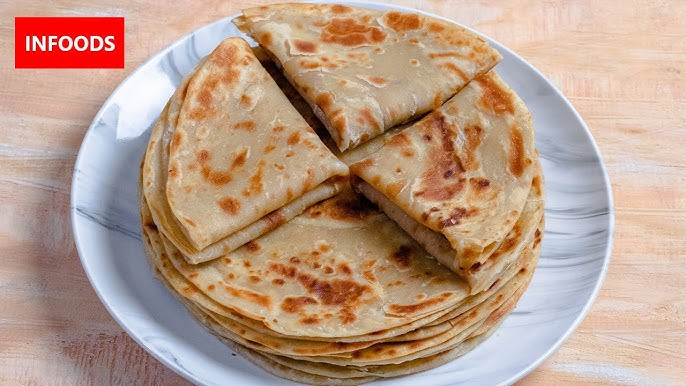

Home
Chapati recipe

Description
Ingredients
- 2 cups whole wheat flour
- 1/2 teaspoon salt (optional)
- 3/4 cup warm water (adjust as needed)
- 1 tablespoon oil
Steps
- Make the Dough
- Cover the dough with a damp cloth and let it rest for 20–30 minutes.
- Divide the dough into equal-sized portions (about the size of a golf ball).
- Lightly flour your rolling surface and rolling pin. Roll each ball into a thin, round disc about 6–8 inches in diameter. Keep the rolled chapatis covered with a cloth to prevent them from drying out.
- Place one rolled chapati on the hot pan. Cook for about 30 seconds or until bubbles start forming on the surface.
- Flip the chapati and cook the other side for another 30 seconds. Press gently with a spatula or cloth to ensure even cooking.
- Flip the chapati and cook the other side for another 30 seconds. Press gently with a spatula or cloth to ensure even cooking.
- Remove from the pan and keep warm in a covered container or wrap in a clean kitchen towel.